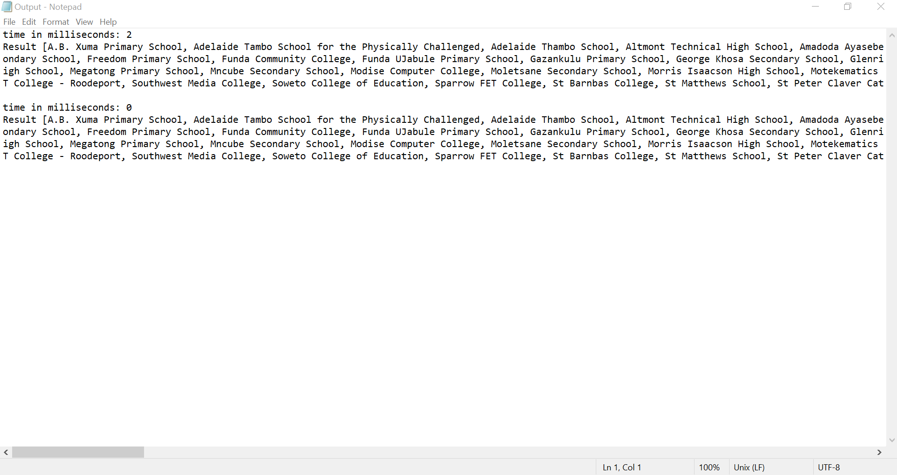
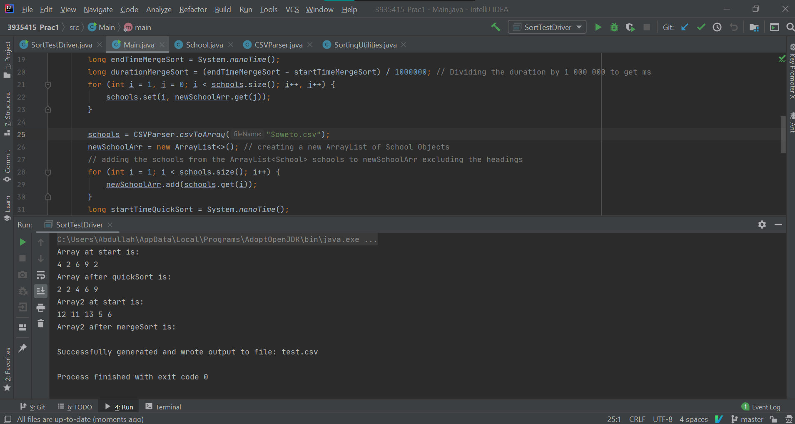

CSC212S2T2P1
3935415, Abdullah Idrees Adam implementation of Practical 1 for CSC212
My GitHub can be found at: Github
What is included?
- SortTestDriver.java, the tests which were written before any of the other classes
- School.java, the School Class which is the template for creating School Objects
- SortingUtilities.java, contains the utility methods for sorting, according to the spec of the practical
- CSVParser.java, contains the methods to parse through the CSV file, as well as to write to a file according to the practical spec
- Main.java, completes all tasks specified by the practical spec, nothing more, nothing less

